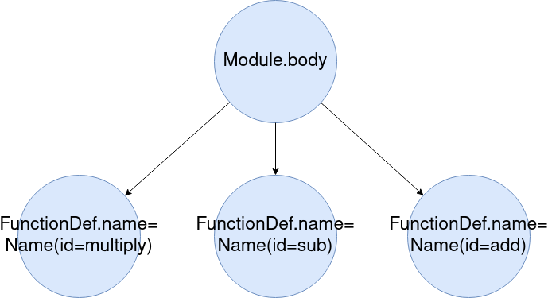
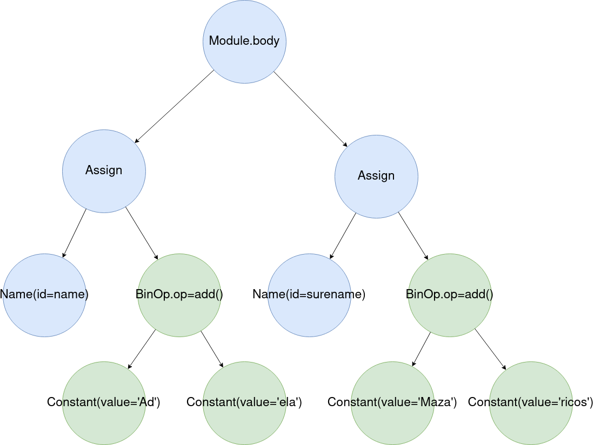

Neste artigo explicarase que é e como funciona a ferramenta PUME (Python Universal Mutation Engine), dando tamén algún exemplo de uso para que se vexa ata onde chega.
Introdución
PUME é unha ferramenta que modifica aleatoriamente o código fonte dun script ou programa feito en Python sen cambiar a funcionalidade do programa orixinal. Isto conséguese principalmente facendo modificacións sobre a Árbore Sintáctica Abstracta (AST polas súas siglas en inglés) do programa. Pero cabe destacar que existe unha modificación que se fai directamente sobre o código fonte. As modificacións que realizan sobre a AST son:
- Cambiar os nomes das clases, funcións e variables (tanto locais coma globais).
- Cambiar as funcións de posición.
- Engadir aleatoriamente a palabra reservada “pass” no código.
- Cambiar números enteiros por unha expresión matemática que teña de resultado o mesmo enteiro que se substituiu.
- Cambiar un string por unha suma de strings.
A modificación que se realiza directamente sobre o código é a de engadir comentarios monoliña con contido irrelevante en liñas aleatorias do código. Isto faise desta maneira porque na AST de Python os comentarios non teñen representación, polo que de base non se poden engadir sobre a AST.
Modificacións sobre a AST
Nesta sección falarase en profundidade das modificacións que PUME é capaz de facer xunto co impacto na AST.
Cambio de nomes
Esta funcionalidade consiste en detectar todos os nomes de variables, funcións e clases que se atopen no código fonte e modificalos sen romper a funcionalidade do programa. Nos seguintes fragmentos de código, móstranse os efectos desta modificación, o primeiro fragmento é o código orixinal e o segundo é o modificado:
class Matematicas:
def suma(a, b):
return a + b
def calcula():
platanos_manuel = 4
platanos_xoan = 5
matematicas = Matematicas()
platanos_totales = matematicas.suma(platanos_manuel, platanos_xoan)
return platanos_totales
calcula()
class Alxebra:
def engade(numero_1, numero_2):
return numero_1 + numero_2
def conta():
uvas_carminha = 4
uvas_dosinda = 5
alxebra = Alxebra()
uvas_finales = alxebra.engade(uvas_carminha, uvas_dosinda)
return uvas_finales
conta()
Na AST as modificacións fanse sobre os nodos de tipo ast.Name cambiando o valor do atributo id. Na seguintes imaxes móstrase o efecto na AST:
 |
|---|
| AST orixinal |
 |
|---|
| AST modificada |
Cambiar as funcións de posición
Como Python permite chamar a funcións independentemente da súa localización nun ficheiro, entón pódese cambiar as funcións de posición sen cambiar a funcionalidade do programa. Esta modificación tamén aplica as funcións das clases. Nos seguintes fragmentos de código, móstranse os efectos desta modificación, o primeiro fragmento é o código orixinal e o segundo é o modificado:
def suma(a, b):
return a + b
def resta(a, b):
return a – b
def multiplica(a, b):
return a * b
def multiplica(a, b):
return a * b
def suma(a, b):
return a + b
def resta(a, b):
return a – b
Na AST as modificacións fanse sobre o atributo body das clases ast.Module e ast.ClassDef cambiando de posición os nodos de tipo ast.FunctionDef. Nas seguintes imaxes móstrase o efecto na AST.
| AST orixinal |
|  |
|---|
| AST modificada |
Engadir “pass”
A palabra reservada “pass” non ten efecto ningún na funcionalidade dun programa, pero na AST de Python ten representación. Todo isto implica que se pode engadir a palabra arbitrariamente na AST sen consecuencias. Nos seguintes fragmentos de código, móstranse os efectos desta modificación, o primeiro fragmento é o código orixinal e o segundo é o modificado:
def suma(a, b):
return a + b
def resta(a, b):
return a – b
def multiplica(a, b):
return a * b
pass
pass
def suma(a, b):
pass
return a + b
def resta(a, b):
return a – b
pass
def multiplica(a, b):
pass
pass
return a * b
Na AST as modificacións fanse sobre o atributo body das clases ast.Module, ast.ClassDef, ast.FunctionDef, ast.AsyncFunctionDef, ast.If, ast.For, ast.While, ast.Try e ast.AsyncFor. Nas seguintes imaxes móstrase o efecto na AST:
| AST orixinal |
| AST modificada |
Cambiar enteiros
Esta funcionalidade consiste en xerar unha expresión matemática a partir dun enteiro. Esta nova expresión matemática terá coma resultado o mesmo valor ca o enteiro orixinal. Nos seguintes fragmentos de código, móstranse os efectos desta modificación, o primeiro fragmento é o código orixinal e o segundo é o modificado:
litros_auga = 15
consumo = -5
litros_auga = 35 - 19 + 678 // 20 - 34
consumo = 789 - 231 % 534 - 563
Na AST o que se consegue é cambiar as clases de tipo ast.Constant con valores que sexan números enteiros por clases de tipo ast.BinOp. Nas seguintes imaxes móstrase o efecto na AST:
| AST orixinal |
 |
|---|
| AST modificada |
Cambiar strings
Esta funcionalidade consiste en xerar a partir dun string unha suma das súas partes. Nos seguintes fragmentos de código, móstranse os efectos desta modificación, o primeiro fragmento é o código orixinal e o segundo é o modificado:
nome = 'Adela'
apelidos = 'Mazaricos Arzua'
nome = 'Ad' + 'ela'
apelidos = 'Maza' + 'ri' + 'cos Arz' + 'ua'
Na AST o que se consegue é cambiar as clases de tipo ast.Constant con valores que sexan strings por clases de tipo ast.BinOp. Nas seguintes imaxes móstrase o efecto na AST:
| AST orixinal |
|  |
|---|
| AST modificada |
Outras funcionalidades
A modificación da AST é a parte máis interesante da ferramenta, pero vale a pena mencionar algunhas das funcionalidades cuxo obxectivo é facilitar o uso da ferramenta:
- Multificheiro: A ferramenta accepta a entrada de varios ficheiros ao mesmo tempo e tamén ten en conta se estes ficheiros importan funcións, variables e clases entre si.
- Reparación de enterios e strings: Esta funcionalidade consiste en, antes de facer os cambios na AST, buscar expresións matemáticas e sumas de strings para deixalos no seu estado orixinal. Desta forma, evítase un crecemento desmesurado do resultado final no caso de executar a ferramenta sobre o resultado dunha execución previa.
- Borrado de “pass”: Antes de engadir a palabra reservada “pass” no código, búscanse todas as aparicións na AST e borranse. Desta forma evítase un crecemento desmesurado do código no caso de executar a ferramenta sobre o resultado dunha execución previa.
Limitacións
Aínda que non guste falar do malo da ferramenta, hai que telo en conta para sacarlle o máximo probeito. A continuación, lístanse as limitacións do programa:
- Debido a como Python manexa os números reais, estes non se modifican. Na seguinte imaxe pódese ver unha situación na que unha suma de números reais non da o resultado correcto.
- Debido a que o tipado de Python é dinámico, non se pode saber o tipo de dato dunha variable ata que se execute o programa. Así que, cando a ferramenta está cambiando os nomes das funcións e dúas clases teñen o mesmo nome para unha función propia, PUME non sabe a que clase pertence cada función. Debido a isto, o programador non pode crear dúas clases con funcións co mesmo nome. Isto tamén aplica as clases da libraría estándar. No seguinte fragmento de código, o programador creou unha clase cunha función que ten o mesmo nome ca outra función da libraría estándar. Nesta situación PUME non pode diferenciar que función é cal:
class MyClass:
def __init__(self):
self.data = ["a", "b", "c", "d"]
def find(self, a):
return self.data.index(a)
my_string = "The car is big"
my_string = my_string.find("car")
my_class = MyClass()
position = my_class.find("a")
Para evitar erros na execución da ferramenta, o programador ten que cambiar o nome da función find da clase MyClass, como se mostra no seguinte fragmento de código.
class MyClass:
def __init__(self):
self.data = ["a", "b", "c", "d"]
def search(self, a):
return self.data.index(a)
my_string = "The car is big"
my_string = my_string.find("car")
my_class = MyClass()
position = my_class.search("a")
Exemplos
Finalmente, agora que xa se presentaron as características principais da ferramenta, a continuación veranse algúns exemplos de uso.
Funcionamento básico
No seguinte exemplo pódese ver como se executa un programa, como se modifica e como despois das modificacións o programa segue funcionando:

Evasión dun antivirus
No seguinte exemplo pódese ver como VirusTotal detecta un ficheiro de Impacket coma malicioso para despois modificalo e volver a analizalo para ver que xa non o detecta.

Creación dun virus
Por último, creouse un virus chamado PUMA que utiliza a ferramenta coma motor para mutar o seu propio código. No seguinte video, mostrase o seu funcionamento:

Palabras finais
E isto é todo colegas! Se vos gustou ou vedes como mellorar a ferramenta deixade un comentario ou abride unha issue no repositorio.
Un saudo e ata outra!